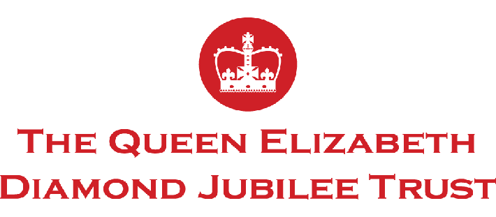
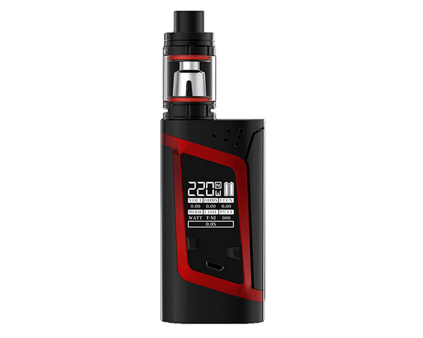
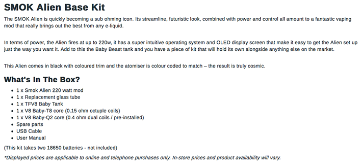
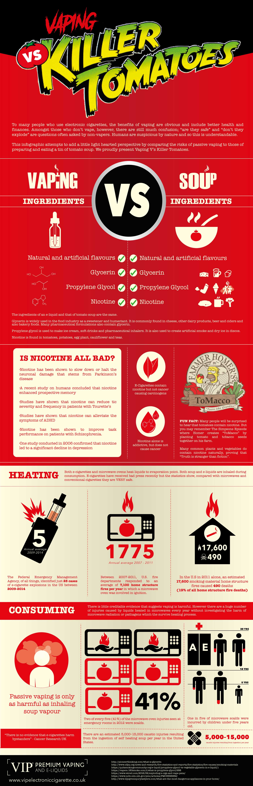
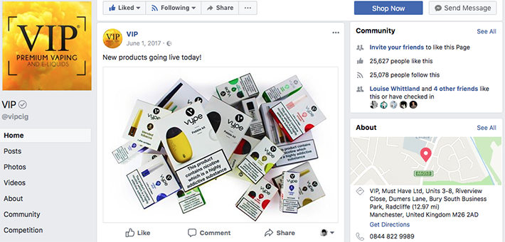
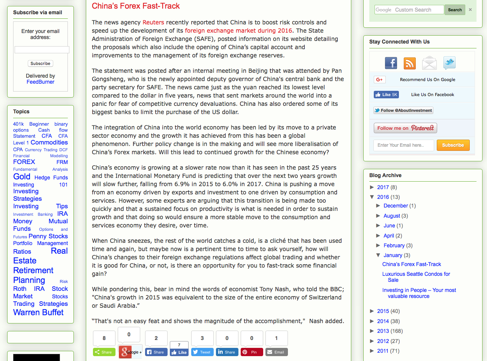

Working as a copywriter, consultant, journalist and digital marketeer since 2014.
Consultancy Work

Producing a social media audit, strategy and best practice guide for The Queen Elizabeth Diamond Jubilee Trust. The work is to help ensure that the trust meets its strategic business goals.
Blogging
The Lake District: A World Heritage Site
Written to enhance the user experience for Lakelovers' customers and to celebrate the Lake District's new status as a world heritage site.
Content written to engage the Chapman target audience and that includes internal links to improve the websites SEO.
A blog post composed to inform and entertain the vaping community and those looking to quit smoking. The post includes copy, images, charts, an interactive poll and video links.
SEO: Link Building
Fintech: How Law Firms Can Surf the Crest of the Wave
Extensive experience in writing about fintech, business, finance and technology.
Product Descriptions
One of many product descriptions, written for clients, is this technical description for the SMOK Alien vaping mod, used on the VIP website.


Conceptual Copy for Infographics

Photography and Image Manipulation

A photograph taken on an SLR camera and then manipulated in Photoshop to produce a striking image for a social media post.

Journalism
This concise news piece was based on in depth research of the given subject.

The following excerpt is from a piece that was published by Ecigintelligence, a subscription only website.
How safe is that battery? The industry’s secrets unwrapped
A long-running series of fires and explosions involving e-cigarette batteries has brought unwelcome publicity for the e-cig industry, and may have contributed to broader public concern over the products’ safety. So how can e-cig sellers ensure they are providing their customers with the safest possible batteries?
Research by ECigIntelligence suggests they should only use removable lithium-ion batteries manufactured by the battery industry’s biggest players in order to ensure safety and optimal performance.
User safety can be compromised in devices with an internal battery charged via an in-built USB port. But even using only removable batteries can lead to problems. Researchers have found many budget brands are simply repackaged batteries from major manufacturers that did not score highly in post-production testing.
Sony, Samsung, LG and AW – the battery industry’s major manufacturers – produce the products with the most consistent results, according to a number of independent researchers such as Best 18650 Battery, which publishes detailed reports on the quality tests they conduct. The major manufacturers package under their own brand the batteries that test best, and sell sub-par but still acceptable batteries on to other companies.
Once a lithium-ion (Li-ion or LIB) battery has been made, it undergoes a very strict and sophisticated testing procedure. The test results dictate where the battery will be used.
– Paul Whittland ECigIntelligence contributing writer